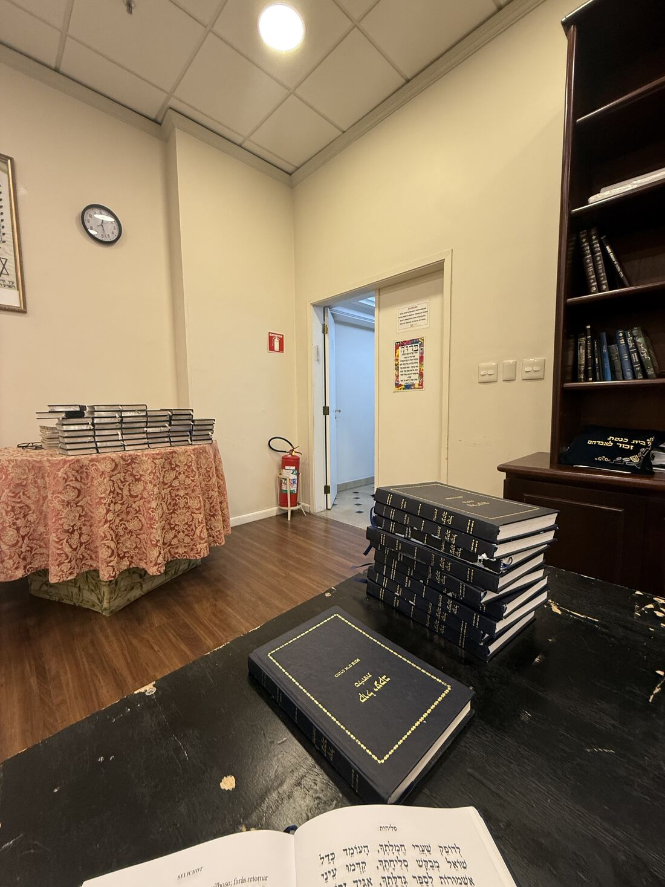

Na noite de quinze de agosto, a primeira noite de Selichot do ano, a sala encheu. Devia ter umas quarenta pessoas, e eu não estava anotando nada ainda. Fui dormir achando que Elul tinha resolvido o assunto sozinho.
No domingo seguinte não veio ninguém.
Também não teve na quarta, nem no domingo depois daquele, nem na quarta depois daquela. Quatro noites de Elul em que a sala ficou vazia e a meia-noite passou sozinha.

Aí quatro de nós sentamos numa madrugada, uma da manhã, para decidir o que fazer. Se dava para montar um site, o que levar de comida, e como não constranger quem quer aparecer sem ter que se comprometer com nada.
No dia 24 de agosto, às 18h16, alguém abriu pela primeira vez uma página que fazia uma coisa só: dizer quantos já tinham dito que vinham. Um número, e um botão. Quem quisesse aparecer na lista aparecia, quem não quisesse contava do mesmo jeito, sem nome nenhum. E era só isso: saber antes da meia-noite se ia dar dez.
Logo abaixo do número, quase de enfeite, ficou o texto das treze middot, para quem abrisse a página antes da hora e quisesse ler alguma coisa.
De 24 de agosto até ontem à noite, 536 aparelhos diferentes entraram no site. A maioria olhou o número e foi embora, que é o que eu também faria. Cento e quarenta e seis abriram esse texto, num total de cento e cinquenta e oito vezes.
Fiquei uns dias olhando para esse número sem saber o que fazer com ele.
Ninguém diz as treze middot sozinho.
Quem está em casa e abre Shemot 34 no celular lê com os taamim, do jeito que se lê Torá. Para dizer aquilo em voz alta, como súplica, que é o que Elul pede, precisa de dez. Contar até dez sempre foi contar a condição das treze.
E o que está do outro lado da espera são as palavras que D'us usou para se descrever diante de Moshe: compassivo e clemente, lento para a ira, farto em bondade e verdade, que guarda a bondade por milhares de gerações e perdoa a falta. Trinta e cinco minutos de reza, três minutos antes de chatzot, para chegar até ali.
E tem mais coisa ali do que a reza. Já teve shiur antes de começar, e já teve resenha depois, gente parada na porta conversando à uma da manhã. São trinta e cinco minutos de Selichot, e o resto acontece na porta.
Desde a noite de 27 de agosto, todas as noites fecharam. Seis seguidas, e uma delas foi um domingo, que era a noite de que a gente tinha medo. Um sábado teve vinte e três pessoas, o maior número que o caderno registrou. E na linha do domingo que finalmente fechou, o caderno diz, inteiro:
Nem tudo funcionou. O botão de confirmar sem dizer o nome existe para tirar o peso de quem não quer se comprometer, e ele traz número. Só que número sem nome promete pouco: dá para apertar e sumir, e isso acontece. A gente vai continuar mexendo. É o único minyan de Selichot à meia-noite de São Paulo, e ninguém nos deu manual.
Nada disso foi meu. Tem um grupo que sai de casa toda noite e ainda chega pensando em quem está faltando: chama, liga, insiste com quem já disse não, justamente na noite em que o número não sobe e seria mais fácil deixar pra lá. Se as noites fecharam, foi por causa dessa gente. Obrigado a cada um do grupo das Selichot. Ao Rav Nathan Souccar, que às nove da noite ainda está no grupo atrás do décimo. E ao Rafael Chalom, o Rosh Site, que definiu o desenho e a ordem em que as coisas aparecem, e que está lá sempre que dá.
Hoje é 21 de Elul. Faltam sete noites de Selichot até Rosh Hashaná.
Em cada uma delas, dez pessoas decidem se as treze vão ser ditas. Escolhe uma e aparece.
no máximo 35 minutos de reza